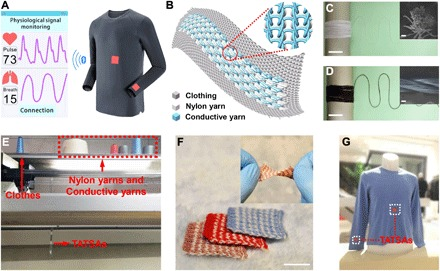

DESIGN & EVALUATION
My Benchmarks
从科研灵感到可执行的科学 Agent 任务。四道化学评测题，记录工具、验收标准与模型运行带来的反思。
阅读评测设计SHIFAN CHEN / CYNARAWATCH
这里汇集我的科学 Agent 评测设计、论文背后的思考与合作，以及持续关注的化学研究资源。
从科研灵感到可执行的科学 Agent 任务。四道化学评测题，记录工具、验收标准与模型运行带来的反思。
阅读评测设计论文背后的问题、洞察与投入。从发酵预测、数据共享到过程安全，也记录导师与合作者给予的帮助。
走进我的研究公开化学数据集与 benchmark 的观测站。查看历年增长，追溯原始来源，并让 Agent 持续跟踪资源更新。
打开化学观测站WHERE RESEARCH BEGAN
本科时与周志浩老师一起开展的织物传感器研究，让我从一项 Science Advances 工作出发，看见材料、信号、模拟与健康应用之间的联系。这段经历，成为我的研究起点之一。
阅读本科研究经历
A CONNECTED PRACTICE
研究提出问题，评测让能力可以检验，开放资源让更多人参与其中。